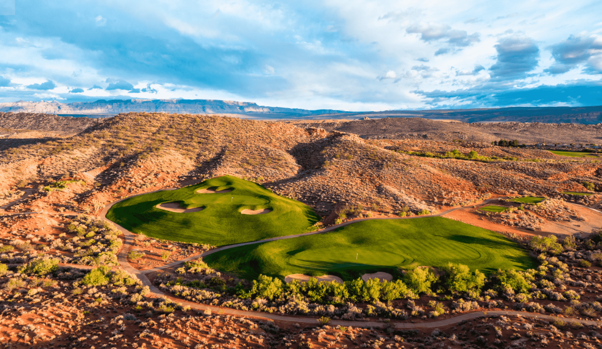
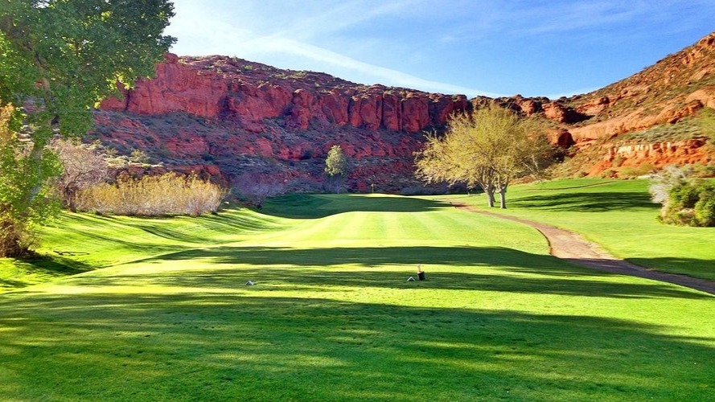
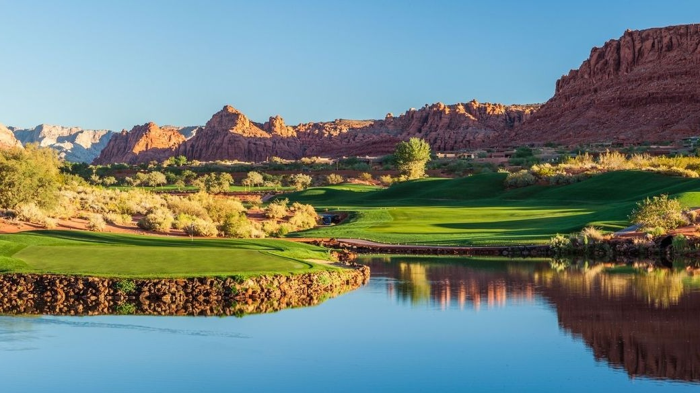

Courses Around St. George
Coral Canyon Golf Course
Description
Coral Canyon Golf Course is a picturesque, public 18-hole golf course known for its dramatic desert setting designed by Keith Foster. It is carved into the stunning red rock landscape with views of the Red Cliffs National Conservation Area. The course is characterized by significant elevation changes, requiring strategic play to navigate the fast, undulating greens and numerous bunkers, offering a challenging yet highly scenic golf experience in the Virgin River Valley.
Sand Hallow Golf Club

Description
Sand Hollow Golf Club is an acclaimed 27-hole facility featuring the spectacular Championship Course and a nine-hole Links Course. Designed by John Fought, the Championship Course is famed for its back nine, which dramatically hugs the edge of red sandstone cliffs, offering breathtaking, panoramic views of Zion National Park and the surrounding mesas.
Dixie Red Hills Golf Course
Description
Dixie Red Hills Golf Course is a historic, municipal course located in the heart of St. George, Utah, renowned for being the city's first golf course and offering a classic, accessible desert golf experience. It is a scenic nine-hole course characterized by dramatic, small red rock outcroppings and large, mature trees that frame the relatively short, walkable layout.
Entrada at Snow Canyon
Description
Entrada at Snow Canyon is a prestigious private golf club featuring a championship course. It is defined by its dramatic contrast, where pristine emerald fairways and greens are carved directly through and over deep, dark ancient black lava fields and stark white sand bunkers, all set against the backdrop of the towering red cliffs of Snow Canyon State Park.
Black Desert Golf Course

Description
Black Desert Golf Course, located in Ivins, Utah, is a stunning, recently opened resort course that stands out due to its landscape of volcanic black basalt rock that contrasts sharply with the green turf, giving it an otherworldly, moon-like appearance. Designed by Tom Weiskopf, the 18-hole course features wide fairways, vast bunker complexes, and an emphasis on strategic shot-making, blending the challenging play of a links-style course with the dramatic scenery of the high desert.